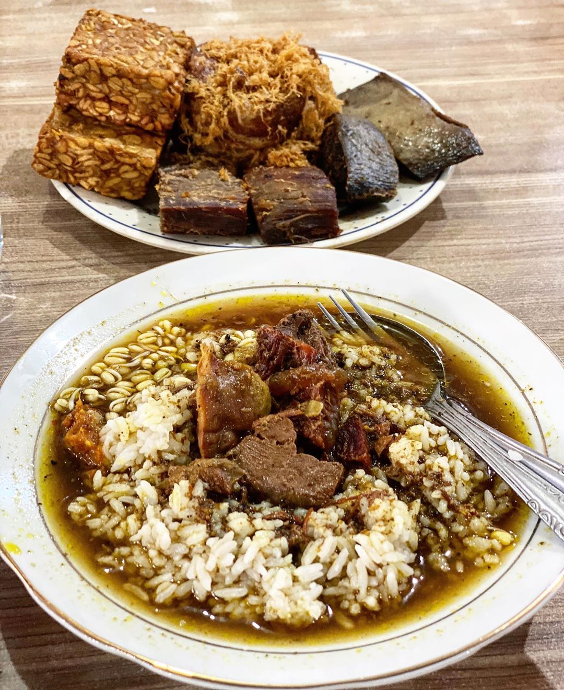
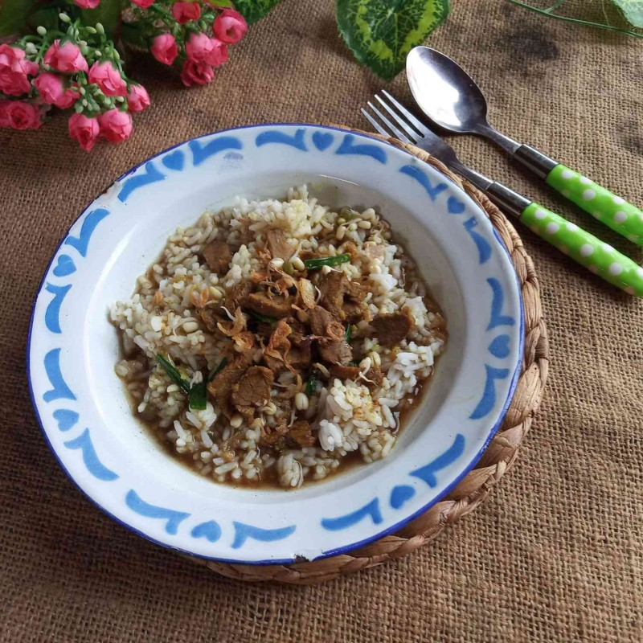
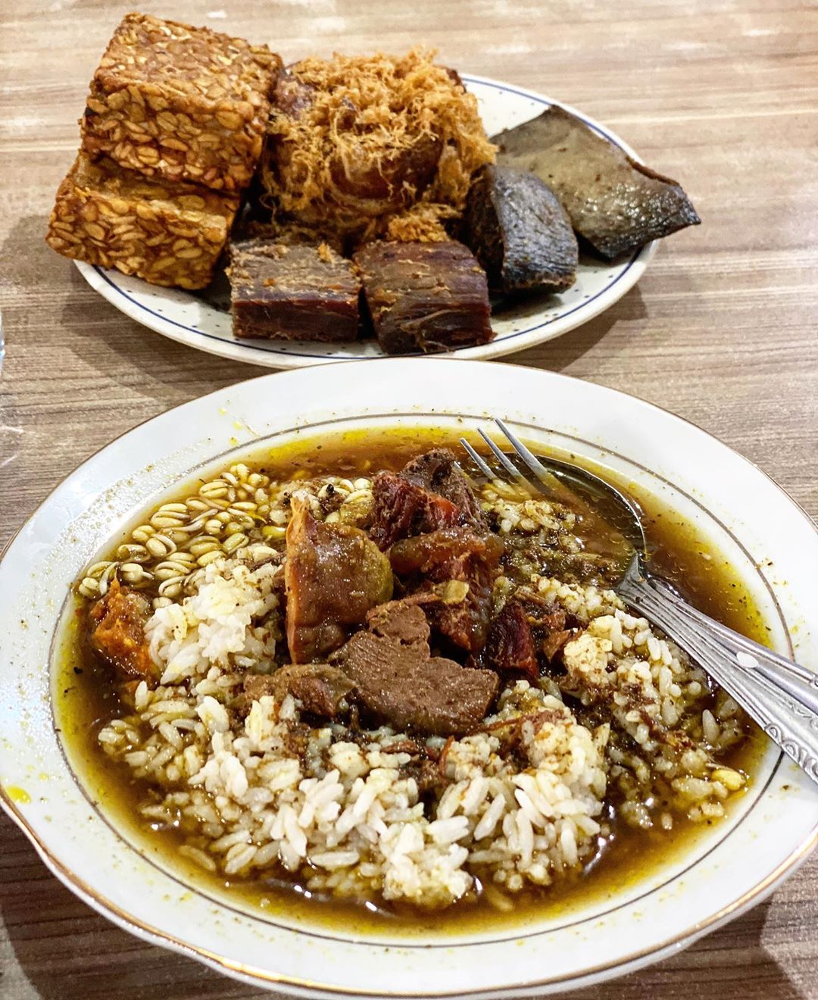
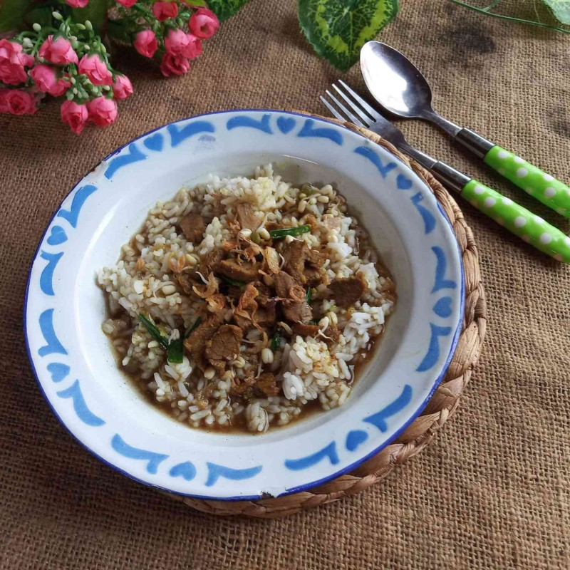

Rawon adalah masakan tradisional ikonik dari Jawa Timur yang sudah me-nasional. Rumah-rumah makan yang menyajikan masakan Indonesia hampir selalu menampilkan rawon sebagai salah satu menu andalannya.
-- Bondan Winarno, professional foodie, from his book: 100 Maknyus!
Rawon adalah masakan berkuah encer, semacam sop daging sapi dengan cita rasa gurih yang sangat intens. Kaldunya yang berwarna coklat kehitaman adalah karena keluah - juga disebut pucung atau buah kepayang - sebagai bahan utamanya. Keluak menciptakan rasa dan aroma earthy yang sangat khas. Dagingnya sangat empuk, terutama karena pilihan daging sandung lamur yang mengandung banyak kolagen dan lemak, serta proses memasak lama dengan api kecil.
Rawon selalu disajikan dengan sambal terasi yang pedas, kecambah (tauge mentah) mentah untuk ditaburkan ke dalam kuahnya selagi panas, telur asin, dan kerupuk udang. Karena rawon hampir selalu disantap dengan nasi, maka kuahnya memang sangat gurih dan agak kental. Tetapi, bila dikehendaki untuk disantap sebagai sop pembuka hidangan, rawon bisa diencerkan agar tidak terlalu gurih dan asin.
Dalam perkembangannya, rawon tidak hanya dibuat dari daging sapi, tetapi juga lutut (dengkul) sapi, buntut sapi, dan iga sapi. Kreativitas baru ini membuat rawon semakin populer dan digemari masyarakat sebagai makanan gaul. Sebagai comfort food, rawon juga bisa disantap kapan saja: sarapan, makan siang, maupun makan malam.
Resep diambil dari buku 100 Maknyus! oleh Bondan Winarno